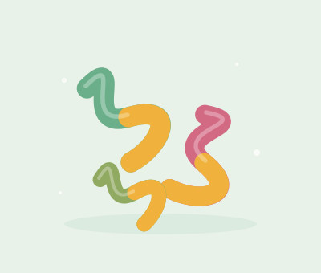

С кислинкой · 150 г
Кислые червячки
Двухцветные жевательные червячки с фруктовым вкусом и кислой посыпкой. Для тех, кому хочется чуть более ярких впечатлений.
200 ₽
Что внутри
Сахар, глюкозный сироп, желатин, вода, лимонная и яблочная кислоты, ароматизаторы, пищевые красители.
Демонстрационное описание. Состав и возможные аллергены настоящего продукта проверяйте на упаковке производителя.
← Вернуться к вкусам